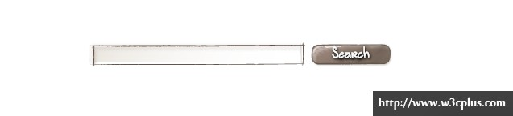
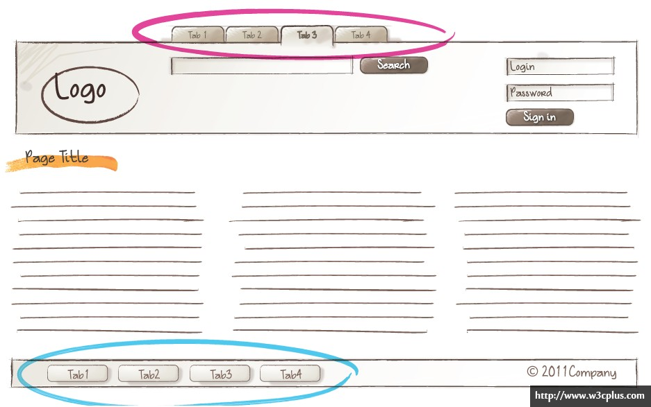

axis-css 是什么?这其实是一种 css 代码命名与开发规范,其引用了 BEM 的思想,通过对页面结构的分析,将页面解耦为一个个可独立使用的组件,从而达到良好的重用与二次开发管理.
通常，一个项目我们只引用一个 CSS，但是对于较大的项目，我们需要把 CSS 文件进行分类。
我们按照 CSS 的性质和用途，将 CSS 文件分成“公共型样式”、“特殊型样式”、“皮肤型样式”，并以此顺序引用（按需求决定是否添加版本号）。
ID 在一个页面中的唯一性导致了如果以 ID 为选择器来写 CSS，就无法重用。
"-"在本规范中并不表示连字符的含义。
它只表示两种含义：分类前缀分隔符，详见以下具体规则。
"_"在本规范中并不表示引用的含义。
它只表示一种含义：模块与元素之间的关联符，详见以下具体规则。
"--"在本规范中表示修饰符的含义
它只表示模块及元素的装饰或状态
约定不以单个字母+"-"为前缀且长度大于等于 2 的类选择器为后代选择器.
这里的后代指两个 block 相互嵌套,在不考虑复用时,即可以使用后代选择器,同时,后代选择器的优先级会高于普通的 BEM 选择器,所以需要注意使用方式,最高支持两个 block 元素相互嵌套.
通过使用后代选择器的方法，你不需要考虑他的命名是否已被使用，因为他只在当前模块或元件中生效，同样的样式名可以在不同的模块或元件中重复使用，互不干扰；在多人协作或者分模块协作的时候效果尤为明显！
注：后代选择器不要在页面布局中使用，因为污染的可能性较大；
/* 这里的.itm和.cnt只在.m-list中有效 */
.m-list{margin:0;padding:0;}
.m-list .m-menu_itm{margin:1px;padding:1px;}
.m-list .m-menu_cnt{margin-left:100px;}
/* 这里的.cnt和.num只在.m-page中有效 */
.m-page{height:20px;}
.m-page .m-menu_cnt{text-align:center;}
.m-page .m-menu_num{border:1px solid #ddd;}
方法：直接加数字或字母区分即可（如：.m-list、.m-list2、.m-list3 等，都是列表模块，但是是完全不一样的模块）。
其他举例：.f-fw0、.f-fw1、.s-fc0、.s-fc1、.m-logo2、.m-logo3、m-button1、m-button2 等等。
遵循 BEM 的命名规范,以block-element__modify作为扩展方式.
当模块或元件之间互相嵌套，且使用了相同的标签选择器或其他后代选择器，那么里面的选择器就会被外面相同的选择器所影响。
所以，如果你的模块或元件可能嵌套或被嵌套于其他模块或元件，那么要慎用标签选择器，必要时采用类选择器，并注意命名方式，可以采用.m-layer .layerxxx、.m-list2 .list2xxx 的形式来降低后代选择器的污染性。
在 xhtml 标准中规定了所有标签、属性和值都小写，CSS 也是如此。
通常在大括号结束前的值可以省略分号，但是这样做会对修改、添加和维护工作带来不必要的失误和麻烦。
为节省不必要的字节同时也使阅读方便，我们将 0px、0em、0%等值缩写为 0。
.m-box{margin:0 10px;background-position:50% 0;}
省略 url 引用中的引号，其他需要引号的地方使用单引号。
.m-box{background:url(bg.png);}
.m-box:after{content:'.';}
除非你需要透明度而使用 rgba，否则都使用#f0f0f0 这样的表示方法，并尽量缩写。
.m-box{color:#f00;background:rgba(0,0,0,0.5);}
只遵循横向顺序即可，先显示定位布局类属性，后盒模型等自身属性，最后是文本类及修饰类属性。
| 显示属性 | 自身属性 | 文本属性和其他修饰 |
|---|---|---|
| display | width | font |
| visibility | height | text-align |
| position | margin | text-decoration |
| float | padding | vertical-align |
| clear | border | white-space |
| list-style | overflow | color |
| top | min-width | background |
先写带有浏览器私有标志的，后写 W3C 标准的。
.m-box{-webkit-box-shadow:0 0 0 #000;-moz-box-shadow:0 0 0 #000;box-shadow:0 0 0 #000;}
请综合考虑以下顺序依据：
从大到小（以选择器的范围为准）从低到高（以等级上的高低为准）从先到后（以结构上的先后为准）从父到子（以结构上的嵌套为准）以下仅为简单示范：
以下仅为简单示范：
/* 从大到小 */
.m-list p{margin:0;padding:0;}
.m-list p.part{margin:1px;padding:1px;}
/* 从低到高 */
.m-logo a{color:#f00;}
.m-logo a:hover{color:#fff;}
/* 从先到后 */
.g-hd{height:60px;}
.g-bd{height:60px;}
.g-ft{height:60px;}
/* 从父到子 */
.m-list{width:300px;}
.m-list .itm{float:left;}
布局（.g-）
| 语义 | 命名 | 简写 |
|---|---|---|
| 文档 | doc | doc |
| 头部 | head | hd |
| 主体 | body | bd |
| 尾部 | foot | ft |
| 主栏 | main | mn |
| 主栏子容器 | mainc | mnc |
| 侧栏 | side | sd |
| 侧栏子容器 | sidec | sdc |
| 盒容器 | wrap/box | wrap/box |
模块（.m-）
| 语义 | 命名 | 简写 |
|---|---|---|
| 导航 | nav | nav |
| 子导航 | subnav | snav |
| 面包屑 | crumb | crm |
| 菜单 | menu | menu |
| 选项卡 | tab | tab |
| 标题区 | head/title | hd/tt |
| 内容区 | body/content | bd/ct |
| 列表 | list | lst |
| 表格 | table | tb |
| 表单 | form | fm |
| 热点 | hot | hot |
| 排行 | top | top |
| 登录 | login | log |
| 标志 | logo | logo |
| 广告 | advertise | ad |
| 搜索 | search | sch |
| 幻灯 | slide | sld |
| 提示 | tips | tips |
| 帮助 | help | help |
| 新闻 | news | news |
| 下载 | download | dld |
| 注册 | regist | reg |
| 投票 | vote | vote |
| 版权 | copyright | cprt |
| 结果 | result | rst |
| 标题 | title | tt |
| 按钮 | button | btn |
| 输入 | input | ipt |
| 卡片 | card | cd |
功能（.f-）
| 语义 | 命名 | 简写 |
|---|---|---|
| 浮动清除 | clearboth | cb |
| 向左浮动 | floatleft | fl |
| 向右浮动 | floatright | fr |
| 内联块级 | inlineblock | ib |
| 文本居中 | textaligncenter | tac |
| 文本居右 | textalignright | tar |
| 文本居左 | textalignleft | tal |
| 垂直居中 | verticalalignmiddle | vam |
| 溢出隐藏 | overflowhidden | oh |
| 完全消失 | displaynone | dn |
| 字体大小 | fontsize | fs |
| 字体粗细 | fontweight | fw |
皮肤（.s-）
| 语义 | 命名 | 简写 |
|---|---|---|
| 字体颜色 | fontcolor | fc |
| 背景 | background | bg |
| 背景颜色 | backgroundcolor | bgc |
| 背景图片 | backgroundimage | bgi |
| 背景定位 | backgroundposition | bgp |
| 边框颜色 | bordercolor | bdc |
状态（modify）
| 语义 | 命名 | 简写 |
|---|---|---|
| 选中 | selected | sel |
| 当前 | current | crt |
| 显示 | show | show |
| 隐藏 | hide | hide |
| 打开 | open | open |
| 关闭 | close | close |
| 出错 | error | err |
| 不可用 | disabled | dis |
一个块是一个独立的实体，就像应用的一块“积木”。一个块既可以是简单的也可以是复合的（包含其他块）。
例如搜索表单块：

一个元素是块的一部分，具有某种功能。元素是依赖上下文的：它们只有处于他们应该属于的块的上下文中时才是有意义的。
例如一个输入域和一个按钮是 Search 块的中的元素。
我们经常需要创建一个和已存在的块非常相似的块，只是外观或行为有些许改变。
比如说我们有一个这样的任务：
给 Footer 添加另外一个布局不一样的 Menu。

为了避免开发一个和现有的块只稍微有点不同的另一个块，我们引入修饰符（modifier）的概念。
修饰符作为一个块或是一个元素的一种属性，代表这个块或这个元素在外观或是行为上的改变。
一个修饰符有一个名字和一个值。多个修饰符可以同时使用
例如：一个用来指定背景颜色的块修饰符(m-search--bg1)

例如：一个改变“当前”选项的元素修饰符(m-tab_item--selected)